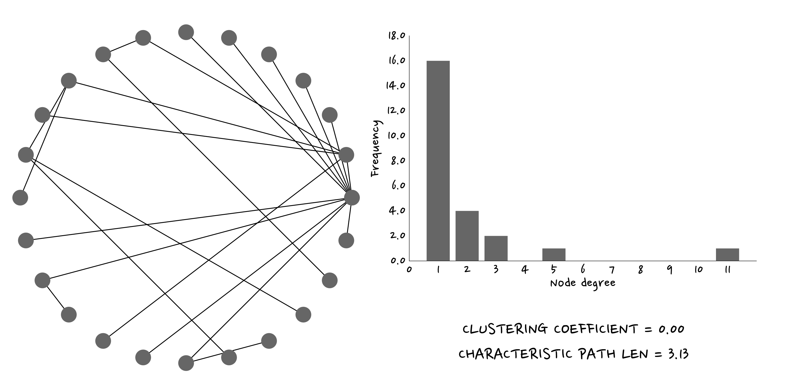

What is a Network?
All the phenomena described in the introducion have something in common: they are built from individual elements that interact between them. For instance, in the explosion of a meme, each element is a person and their communication, one saying to the other that they should check that out that meme, is the interaction. To model that situation we use networks.
This type of graph is defined as a set of nodes, also called vertices, connected (or not) by a collection of edges, also called links. In this framework, a node could represent any kind of object, from individuals to places or even abstract concepts. The links between them, on the other hand, respond to the relationship the pair of nodes in question holds. This interactions can have a particular direction, be undirected or take both directions. Moreover, they can also represent interactions of the node with itself, called self-loops.
Finally, networks also generate structures. One exemple are paths, the set of edges one can take in order to move from one node to another. A closed paths, ie. you can come back to the first node without going backwards, may be called a cycle.
This type of graph is defined as a set of nodes, also called vertices, connected (or not) by a collection of edges, also called links. In this framework, a node could represent any kind of object, from individuals to places or even abstract concepts. The links between them, on the other hand, respond to the relationship the pair of nodes in question holds. This interactions can have a particular direction, be undirected or take both directions. Moreover, they can also represent interactions of the node with itself, called self-loops.
Finally, networks also generate structures. One exemple are paths, the set of edges one can take in order to move from one node to another. A closed paths, ie. you can come back to the first node without going backwards, may be called a cycle.

Properties
In order to study and understand the phenomena that a network represents it is necessary to characterise the network with some features. Let's see the most important ones!
Number of nodes and links
An obvious characterisation is the numbers of nodes and links of the complex network, but perhaps it won't bring a deep knowledge about the studied system, as we'll be interested in the interactions of the elements. This measure does give us a feel for the level of complexity the system may present, though, since complexity arises from the interaction of many units. On a more technical level, it allows us to get a sense of computational complexity, that is, the time it may take to run algorithms or simulations on a given network.
Degree of a node
The degree of a node is defined as the number of links that are connected to it. In the case of directed graphs, both in-degree and out-degree can be considered for each node. Their sum results in the total degree, which corresponds to what we would obtain if the graph was undirected.

Degree distribution and average degree
After computing the degree for each node of the network one can visualise its distribution. This allows us to know which is the mean degree, the dispersion and the overall shape of the distribution on a global level. For instance, some networks have the same degree for each node, in others more or less all of the nodes have a degree around the mean degree and in some networks is rather impossible to predict the degree! But for now let's focus on a simple example.

Distances between nodes, average distance and Graph diameter
The distance between two nodes is defined as the number of edges along the shortest path connecting them. In directed graphs each path needs to follow the direction of the arrows. Thus, in a directed graph the distance from node A to B (on an AB path) is generally different from the distance from node B to A (on a BA path).
 The average shortest path in real (complex) networks is short in comparison to regular networks (a 2D-lattice) but still a bit longer than in a network where the links between nodes are set randomly. The graph diameter is defined as the maximum distance between any pair of nodes in the graph. It is important to note that it is not the longest path- since the distance is computed along the shortest path, the diameter will be the maximum of the shortest paths between any pair of nodes.
The average shortest path in real (complex) networks is short in comparison to regular networks (a 2D-lattice) but still a bit longer than in a network where the links between nodes are set randomly. The graph diameter is defined as the maximum distance between any pair of nodes in the graph. It is important to note that it is not the longest path- since the distance is computed along the shortest path, the diameter will be the maximum of the shortest paths between any pair of nodes.
The average shortest path in real (complex) networks is short in comparison to regular networks (a 2D-lattice) but still a bit longer than in a network where the links between nodes are set randomly. The graph diameter is defined as the maximum distance between any pair of nodes in the graph. It is important to note that it is not the longest path- since the distance is computed along the shortest path, the diameter will be the maximum of the shortest paths between any pair of nodes.
Clustering
Some of the nodes are more connected with a given set of nodes, probably their neighbours (in the case of a network representing a real spatial sytem), and have weak connections or even no connection at all with the furthest nodes. This allows the network to develop some structures. One of these are the componets. We can think about them as sub-graphs, disconnected among them, that are part of the same network. There may also be cliques- in such a structure all nodes are connected to all! We could also take a look at how the nodes are connected. Sometimes, the exact same connection pattern appears more than once in a network. Those are called motivs.

To have a sense of the connection level of a particular node locally there are some other measure we can compute. One of them is the so-called local clustering coefficient. This measure with a non-super original name provides a realible measure of the connectivity surrounding the node in question, thus giving some information about the relative relevance of the node in the connectivity of the structure.
Types of networks
Ok! Now we know that different networks can have different properties. But, are there some values or shapes of those characteristics, or even some network by themselves, more common than others? As it turns out, nature indeed displays more frequently some patterns over others.
Regular lattices
The simplest type of networks are regular lattices. In such models a node is connected to k neighbours. We can find this sort of networks in webs, and in different dimensions too. For instance, the atoms of a cristal are structured in this manner.
Random networks
This sort of network is the next simplest form of a network. To construct such a model one needs to create a number of nodes and connect them with a given probability. Boom! That is all. Although it has been used extensively in the network field due to its simplicity, is not a good model for real life phenomena. However, it is commonly used as a benchmark or baseline model.
Small world networks
In 1998 Strogatz and Watts published a paper where they discussed that there may be a better model to describe phenomena than the networks we mentioned above. They argued that real-life networks have low average path length while having a high clustering. Moreover, they presented an algorithm- ie, the steps- to generate this sort of model. One variation of this process could be:
- Generate a regular ring with n nodes and k connected neighbours.
- Pick an edge
- With probabilitity p, delete that edge.
- Choose one of the nodes randomly.
- Randomly rewire the edge at the other end.
- Repete for each unvisited edge
Preferential attachment networks
Finally, it turned out as Barabatzi and albert pointed out, that some nets still behave differently to all network types explained above. In this phenomena some nodes have tons of edges while most of them have just a few . This represents quite well, for instance, companies' relationships networks. Some big ones, like Google or Nestle, have a huge number of edges, but most of the companies (which are small) have little relation to others. To construct these nets one can use the following recipe:

- Start with m0 randomly connected nodes.
- Add a new node to m of the current nodes (m smaller or equal to m0) with a probability proportional to their degree.
- Repeat the previous step